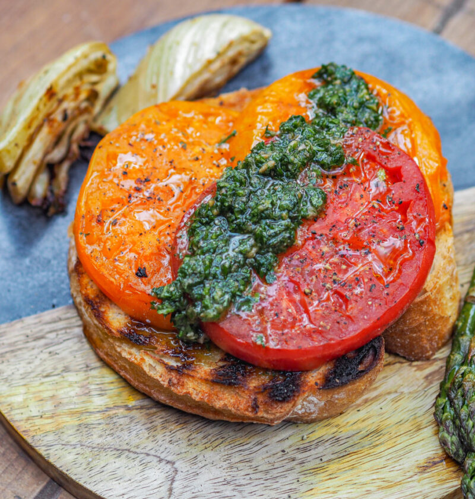

Stek z pomidora

Stek z pomidora – sztuka cudownego warzywa
Składniki
- 1 bardzo duży, mięsisty pomidor – około 500g (żółty, malinowy, bawole serce itp)
- 2-3 łyżki oliwy z oliwek
- sól, świeżo zmielony pieprz do smaku
- 2 grube kromki łatwego do tostowania pieczywa
- 2 łyżki szybkiego pesto z pietruszki
Wykonanie
- Pomidora kroimy w poprzek na 2-3cm plastry, końcówki odkładamy.
- Wewnętrzne plastry smarujemy oliwą (lub bezpośrednio polewamy już na grillu) i układamy na średnio rozgrzanym ruszcie.
- Posypujemy solą i pieprzem. Trzymamy na jednej stronie około 5 minut.
- Chleb tostujemy na grillu (również można go posmarować oliwą).
- Chleb układamy na talerzu, obie kromki obok siebie (jak na zdjęciu).
- Nakładamy łopatką pomidory, 2-3 plastry.
- Nakładamy pesto lub podajemy osobno w miseczce.
Home